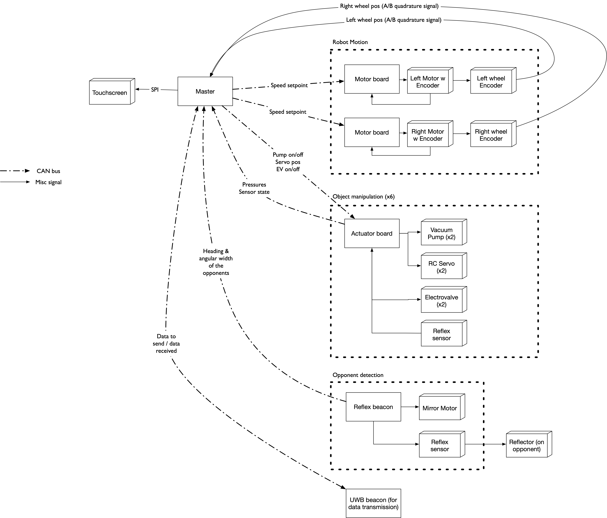

Hardware architecture overview (2020 edition)

The robot is organized around a master board running a STM32F4. This board is responsible for most of the high-level tasks in the robot:
- Odometry
- High level control & pathfinding
- Game script
- User interface
The low-level functions are delegated to simpler boards, running smaller microcontrollers. Board exchange messages over CAN bus using the UAVCAN protocol.
- Our motor boards are responsible for PID control of a single motor. In 2020, they are used only for the wheelbase, but they are very generic and can be used for other purposes, e.g. controlling a robot's arm.
- To handle the objects used by the 2020 rules, we chose to use suction cups and vacuum pumps. In order to control those, we designed a specific actuator board. This board also integrates vacuum sensor to detect if an object was correctly taken. An optical sensor allows this board to detect if an object is close. Finally, it can control standard RC servomotors, as we needed those this year.
- The robot detects opponents by using a beacon system based on light reflection. The beacon mast emits a beam of light, which is reflected by a circular catadiopter fitted on each opponent. By rotating the sensor, the Debra platform measures the apparent size of the reflector, which provides an approximation of the distance. This information is then sent back to the master board over CAN.
- The two robots in a team can communicate together and with the lighthouse using UWB radio. To do so, we re-use the modules developed for positioning but only for data transmission.